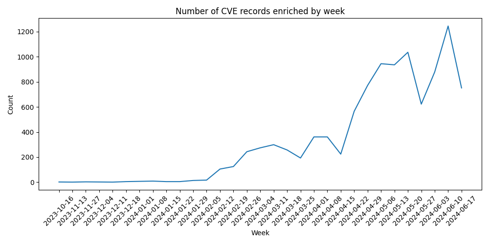
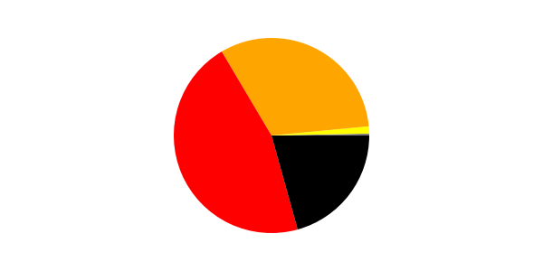

Vulnrichment Dashboard
Updated 2024-08-28 13:54:13 PST
CVE SSVC Enrichment Data
The data presented in this table represents the number of CVE records enriched by the Cybersecurity and Infrastructure Security Agency (CISA) as part of their vulnerability enrichment (vulnrichment) effort. The records are categorized by different time periods: Today, This Week, Last Week, This Month, Last Month, and This Year. These time periods are calculated using the timestamp values found in the SSVC content provided by CISA in the vulnrichment GitHub repository.
| Time Period |
CVE Count |
| Today |
259 |
| This week |
723 |
| Last week |
1175 |
| This month |
4741 |
| Last month |
5158 |
| This year |
23702 |

SSVC Exploitation
| Exploitation |
Count |
| Active |
138 |
| POC |
4515 |
| None |
19082 |
SSVC Automatable
| Automatable |
Count |
| Yes |
3923 |
| No |
19812 |
SSVC Technical Impact
| Technical Impact |
Count |
| Total |
7969 |
| Partial |
15766 |
CVE Record Enhancements (ADP)
| Metric/Property |
Number of CVE records with enhancement |
| CVSS 3.1 Score |
4160 |
| CWE-ID |
3904 |
| CPE String (at least 1) |
12055 |
| CISA KEV Presence |
136 |
Top 5 CWE IDs (ADP)
| CWE ID |
Count |
| CWE-79 - Improper Neutralization of Input During Web Page Generation ('Cross-site Scripting') |
372 |
| CWE-89 - Improper Neutralization of Special Elements used in an SQL Command ('SQL Injection') |
362 |
| CWE-121 - Stack-based Buffer Overflow |
259 |
| CWE-94 - Improper Control of Generation of Code ('Code Injection') |
204 |
| CWE-284 - Improper Access Control |
163 |
CVSS 3.1 Severity Level Distribution (ADP)

| Severity Level |
Count |
| Critical | 861 |
| High | 1907 |
| Medium | 1331 |
| Low | 48 |
| None | 13 |
ADP/CNA CVSS 3.1 Score Comparison
This table shows the average CVSS 3.1 base score calculated from all vulnrichment CVE records that contain a CVSS 3.1 score from BOTH the ADP and the CNA.
| Average ADP CVSS 3.1 Score |
Average CNA CVSS 3.1 Score |
Difference |
| 7.45 |
6.84 |
0.61 |